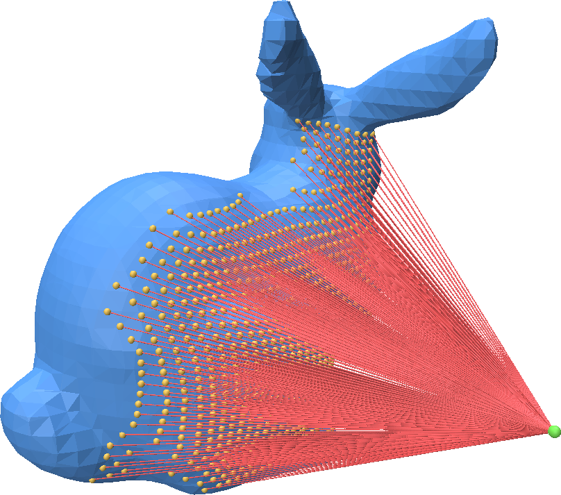
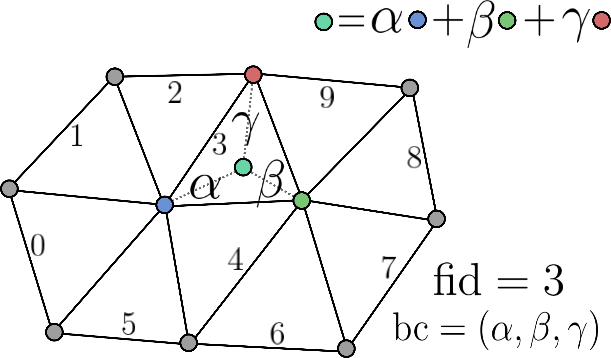

Ray Mesh Intersection
Point-Cloud-Utils supports fast ray-mesh intersection using Intel Embree. There are two ways of performing ray-mesh queries. For one-off queries, use the functional interface, and for repeated queries on a mesh, use RayMeshIntersector
One-off Ray-Mesh Queries using the Functional Interface
You can call ray_mesh_intersection to compute the intersection between a collection of rays and a triangle mesh:
import point_cloud_utils as pcu
import numpy as np
v, f = pcu.load_mesh_vf("bunny.ply")
# Generate a raster grid of Rays looking down the +Z axis
x, y = np.mgrid[-0.5:0.5:32j, -0.5:0.5:32j]
ray_d = np.stack([x.flatten(), y.flatten(), np.ones_like(x.flatten())], axis=-1)
ray_d /= np.linalg.norm(ray_d, axis=-1, keepdims=True) # Normalize ray directions -- shape [N, 3]
# Rays originating at -Z looking down the Z-axis
ray_o = np.array([0.0, 0.15, -0.75])
ray_o = np.repeat(ray_o[None, :], ray_d.shape[0], axis=0) # Repeat the ray origin so there is one per ray -- shape [N, 3]
fid, bc, t = pcu.ray_mesh_intersection(v.astype(ray_o.dtype), f, ray_o, ray_d)
# True only at the rays which intersected the shape
hit_mask = fid >= 0
ray_intersections = pcu.pcu.interpolate_barycentric_coords(f, fid[hit_mask], bc[hit_mask], v)

Repeated Ray-Mesh Queries using RayMeshIntersector
You can call ray_mesh_intersection to compute the intersection between a collection of rays and a triangle mesh:
import point_cloud_utils as pcu
import numpy as np
v, f = pcu.load_mesh_vf("bunny.ply")
# Generate a raster grid of Rays looking down the +Z axis
x, y = np.mgrid[-0.5:0.5:32j, -0.5:0.5:32j]
ray_d = np.stack([x.flatten(), y.flatten(), np.ones_like(x.flatten())], axis=-1)
ray_d /= np.linalg.norm(ray_d, axis=-1, keepdims=True) # Normalize ray directions -- shape [N, 3]
# Rays originating at -Z looking down the Z-axis
ray_o = np.array([0.0, 0.15, -0.75])
ray_o = np.repeat(ray_o[None, :], ray_d.shape[0], axis=0) # Repeat the ray origin so there is one per ray -- shape [N, 3]
# Generate new rays via a random rotation
random_rotation = np.linalg.svd(np.random.randn(3, 3))[0]
ray_o2 = np.ascontiguousarray((random_rotation @ ray_o.T).T)
ray_d2 = np.ascontiguousarray((random_rotation @ ray_d.T).T)
intersector = pcu.RayMeshIntersector(v, f)
# Intersect first batch of rays
fid, bc, t = intersector.intersect_rays(ray_o, ray_d)
hit_mask = fid >= 0 # True only at the rays which intersected the shape
ray_intersections = pcu.interpolate_barycentric_coords(f, fid[hit_mask], bc[hit_mask], v)
# Intersect second batch of rays
fid2, bc2, t2 = intersector.intersect_rays(ray_o2, ray_d2)
hit_mask2 = fid >= 0 # True only at the rays which intersected the shape
ray_intersections2 = pcu.interpolate_barycentric_coords(f, fid2[hit_mask2], bc2[hit_mask2], v)

Representing mesh-surface samples in Point Cloud Utils
Point Cloud Utils returns samples on the surface of a mesh using Barycentric Coordinates. i.e. each sample is encoded as:
- The index of the mesh face containing it (usually referred to as
fid) - The barycentric coordinates of the point within that face (usually referred to as
bc)

To recover vertex quantities from fid, bc pairs use the function pcu.interpolate_barycentric_coords(f, fid, bc, vertex_quantity)